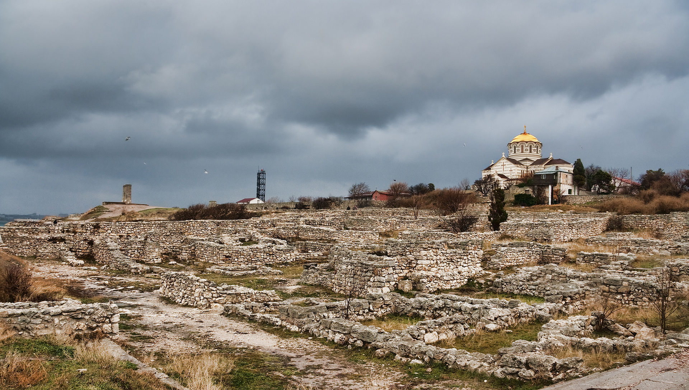

Роком народження заповідника став 1965 рік, коли в серпні цього року П.
Тронько, тоді заступник Голови Уряду України, разом з колишнім
секретарем ЦК КП України А. Скабою та заступником голови Запорізького
облвиконкому М. Киценком підготували для керівництва і відстояли ідею
про необхідність увічнення пам'яті запорозького козацтва[1]. Доповідь П.
Т. Тронька про увічнення пам'ятних місць, пов'язаних з історією
козацтва, 31 серпня 1965 року розглянула Президія ЦК КПУ. Її виголошення
супроводжувала, як пише Ю. Данилюк, незвична тиша. Члени і кандидати в
члени Президії, крім секретаря ЦК, не поспішали висловити свою власну
думку, очікуючи реакції першого секретаря ЦК КПУ Петра Шелеста. Його
думка і визначила хід обговорення питання, поставленого на порядок
денний. П. Шелест висловив надію, що внаслідок проведення великої й
цілеспрямованої роботи буде створений величний меморіал, гідний славного
історичного минулого українського народу.

Херсонес Таврійський
Достеменно дата заснування Херсонеса Таврійського не встановлена.
Протягом майже всього ХХ ст. загальноприйнятою вважалася дата заснування
422—421 рр. до н. е. греками-дорійцями з Гераклеї Понтійської разом із
беотійцями за знаменням Дельфійського оракула[6] як грецький поліс на
північному узбережжі Чорного моря і за античної доби став важливим
торговельним, ремісничим і політичним центром південно-західного
узбережжя Таврики. Херсонес розміщений між Карантинною і Пісочною
бухтами в межах сучасного міста Севастополя. Проте найдавніші
археологічні знахідки в Херсонесі — уламки чорнофігурної кераміки —
датуються рубежем третьої і четвертої чверті VI століттям до н. е., що
надало дослідникам аргументів для передатування заснування міста, про що
досі точаться дискусії. За свідченням Страбона, поряд з Херсонесом
Таврійським розташовувалося інше місто, яке Страбон називає Давній
Херсонес, і яке в науковій літературі отримало найменування «Страбонів».
Батьківщина-Мати
Найбільш високий пам`ятник в столиці - знаменита «Батьківщина-мати». Ця
монументальна скульптура знаходиться на території меморіального
комплексу «Музей Великої Вітчизняної Війни», і побудована в 1981 році за
проектом В.Бородія. Її висота становить цілих 102 метра, і вона входить
в топ-5 найвищих скульптур у всьому світі!